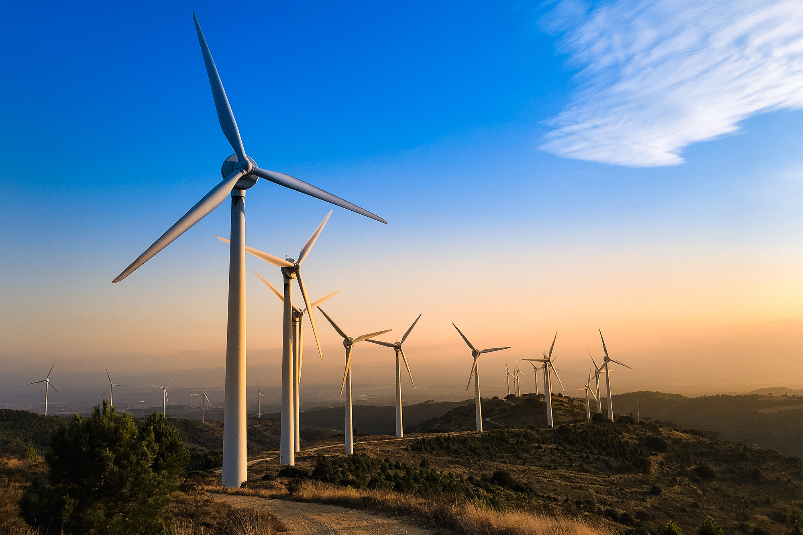

"Renewable energy is energy that comes from a source that won’t run out. They are natural and self-replenishing, and usually have a low- or zero-carbon footprint."
The most common way to produce renewable energy. Collected through turbines which convert the kinetic energy produced when the turbines move due to wind and convert it into electrical energy.

Can be collected through solar panels. Coverts energy collected from photons in light into electrical energy
Can be found in hydroelectric dams. The technology uses water flow as a kinetic energy source to be able to produce electrical energy
Is energy transferred from biomass like algae, wood, plants, etc and is converted into electrical energy